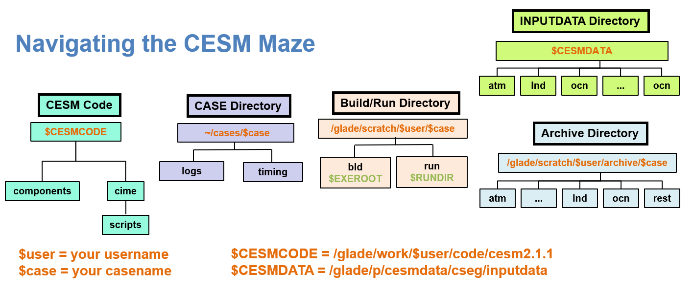

Exercise 2.1 Create, Setup, Update, and Build a Case
Contents
Exercise 2.1 Create, Setup, Update, and Build a Case#
Returning to the Cheyenne terminal window we are going to create, setup, and build a new CESM Case in the CASE Directory in your personal CESM Workspace. Specifically in this exercise we will:
Step 1. Create the CASE Directory workspace location in your Home Directory.
Step 2. Use the create_newcase script from the CIME Scrips Directory to create a new case in the CASE Directory.
Step 3. Change into the new case directory and explore the newly created files and some default XML values.
Step 4. Use the case.setp script from the new case in the CASE Directory to.
Step 5. Use the case.build script to create all the files required to run CESM

Figure: Directories of the CESM2 Workspace Paths
Step 1. Create Cases Workspace Location#
Returning to your terminal window you will now set up your Cases Workspace Location on the Cheyenne glade file system. You will be using your /glade/u/home/$USER location as this is set aside specifically for your use. This directory can also be accessed using the ‘~’ path.
cd /glade/u/home/$USER
or
cd ~
Note $USER is an environment variable of your username. You can use the environment variable or your username interchangeably.
Exercise: Create the top level case workspace location:
mkdir cases
Step 2. Use the create_newcase Script to Create a New Case#
You will start in the CIME scripts directory which we created in Exercise 1. This can be found in /glade/work/$USER/code/cesm2.1.1/cime/scripts. In this directory we will be running create_newcase script with the casename, compset, and resolution covered in the CESM Workflow pages.
cd /glade/work/$USER/code/cesm2.1.1/cime/scripts
Exercise: Look at all of the CESM compset definitions:
./query_config --compsets | more
Note the ” | more” after the command sends the output of the query_config script to the “more” tool so you can scroll through it more easily. You can use the spacebar to move to the next page and the q key to quit out of the tool.
Exercise: Look at all of the CESM grid resolutions:
./query_config --grids --long | more
Exercise: Create the new case b.day1.0 with the resolution f19_g17 and the B1850 Compset:
./create_newcase --case ~/cases/b.day1.0 --res f19_g17 --compset B1850
Check that the output of the create_newcase command matches that shown in the CESM Workflow section. If you don’t get the successful Create Case statement at the end of the create_newcase output then ask for help. You will need this to work for the rest of the tutorial.
Step 3. Explore the New Case Directory#
You will be using the newly created case in /glade/u/home/$USER/cases/ location as this is set aside specifically for your use. This directory can also be accessed using the ‘~/cases/’ path.
cd ~/cases/b.day1.0
Note from now on we will simply use ~ to access your home directory
Exercise: Explore the new case directory:
ls -l
Check that the contents of the new case directory matches that shown in the CESM Workflow section.
Exercise: Check the currently assigned JOB_QUEUE:
./xmlquery JOB_QUEUE
Exercise: Check the currently assigned PROJECT:
./xmlquery PROJECT
Step 4. Update JOB_QUEUE and PROJECT then Run the case.setup script#
The default values in the New Case directory may need to be updated to reflect your account and the Cheyenne environment.
./xmlchange JOB_QUEUE=regular
Exercise: If directed change the assigned PROJECT:
./xmlchange PROJECT=UESM0013
Exercise: Run case.setup in the new case directory:
./case.setup
Check that the output of the case.setup matches that shown in the CESM Workflow section. If you don’t get the successful Case Setup statement at the end of the output then ask for help. You will need this to work for the rest of the tutorial.
Step 5. Check the case and then run the case.build script#
The final step in generating the New Case is to build all the namelists, inputdata, runscripts and executables. To check that everything is in place prior to the build we can run the script preview_namelists. This is an optional step as build will do this automatically if the preview_namelists has not been run. Remember that the build process is both time and cpu intensive for the login nodes so use qcmd (Queue Command) to have the build occur through the batch queue scheduler on other compute nodes.
./preview_namelists
If everything is correct and in place the preview_namelist should report Finished creating component namelists. If this is successful you are ready to build your case.
Exercise: Run the case.build script using qcmd:
qcmd -- ./case.build
The case.build script can take some time to complete. While you are waiting you can return to the Additional Exercises in Exercise 1 or take a short break. The build script should end with MODEL BUILD HAS FINISHED SUCCESSFULLY. If you don’t get the successful Case Build statement at the end of the output then ask for help. You will need this to work for the rest of the tutorial.
Exercise: Examine the Build directory:
ls -l /glade/scratch/$USER/b.day1.0/bld
Exercise: Examine the Run directory:
ls -l /glade/scratch/$USER/b.day1.0/run
Congratulations you have now created, setup, and built your first CESM simulation!!